import tensorflow as tfLab 7 · TensorFlow & Keras: DNN and CNN
Tensors, data-flow graphs, automatic differentiation, and image classifiers for MNIST and CIFAR-10
Introduction to TensorFlow/Keras with dense and convolutional networks on MNIST and CIFAR-10.
NoteAbout this edition
English text and comments were edited for publication. Outputs are archived notebook results, not newly executed results. Lab scaffolds and reference illustrations were supplied by the course. Source and reproducibility notes.
TipSummary
After hand-written NumPy networks in the previous labs, this session moves to TensorFlow: tensors as NumPy-like arrays, a small data-flow graph, and automatic differentiation with tf.GradientTape (checked against the hand-derived sigmoid derivative). Keras is then used to build a dense network for MNIST, and a dense network versus a convolutional network for CIFAR-10. The loss and accuracy curves show the DNN overfitting quickly while the CNN generalizes noticeably better.
1. TensorFlow & Keras
1.1 TensorFlow
TensorFlow is a numerical computation library developed by Google. - Its core is very similar to NumPy, but it supports computation on GPUs/TPUs. - Numerical operations are expressed as a data-flow graph. - Low-level TensorFlow operations are implemented in C++, and each operation has several implementations called kernels. - Kernels are specialized for a device (CPU, GPU, TPU); GPU/TPU kernels provide massive parallelism.
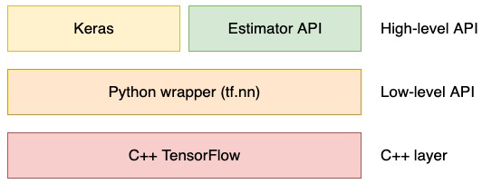
In TensorFlow a tensor is a multi-dimensional array.
The name refers to the flow of tensors: tensors travel along the edges of a graph and operations are performed at the nodes.
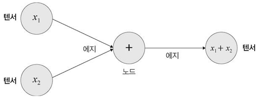
1.1.1 Using TensorFlow like NumPy
A = tf.constant([[1, 2, 3], [4, 5, 6]])
a = tf.constant([2, 4, 5])
print("Tensors")
print(A)
print(a)
print("\nIndexing")
print(A[:,1:])
print("\nShape & type")
print(A.shape)
print(A.dtype)Tensors
tf.Tensor(
[[1 2 3]
[4 5 6]], shape=(2, 3), dtype=int32)
tf.Tensor([2 4 5], shape=(3,), dtype=int32)
Indexing
tf.Tensor(
[[2 3]
[5 6]], shape=(2, 2), dtype=int32)
Shape & type
(2, 3)
<dtype: 'int32'>TensorFlow supports all the usual tensor operations.
A + 10 # tf.add(A, 10)<tf.Tensor: shape=(2, 3), dtype=int32, numpy=
array([[11, 12, 13],
[14, 15, 16]], dtype=int32)>tf.square(A)<tf.Tensor: shape=(2, 3), dtype=int32, numpy=
array([[ 1, 4, 9],
[16, 25, 36]], dtype=int32)>A @ tf.transpose(A) # tf.matmul(A, tf.transpose(A))<tf.Tensor: shape=(2, 2), dtype=int32, numpy=
array([[14, 32],
[32, 77]], dtype=int32)>Beyond the examples above, NumPy-like functions such as mean(), sum(), max() and log() all work.
Conversion between NumPy arrays and TensorFlow tensors is also built in.
A.numpy()array([[1, 2, 3],
[4, 5, 6]], dtype=int32)import numpy as np
a = np.array([2, 4, 5])
tf.constant(a)<tf.Tensor: shape=(3,), dtype=int64, numpy=array([2, 4, 5])>1.1.2 Building a Data-flow Graph
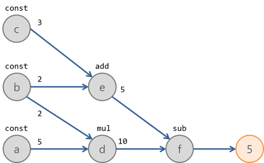
################## Fill Your Code! ##################
a = tf.constant(5)
b = tf.constant(2)
c = tf.constant(3)
d = tf.multiply(a, b) # a * b
e = tf.add(c, b) # c + b
f = tf.subtract(d, e) # d - e
#####################################################
print(f)tf.Tensor(5, shape=(), dtype=int32)The example above only uses add, multiply and subtract,
but recalling how we built neural networks with NumPy in earlier labs and assignments,
it is clear that neural networks can be built with TensorFlow in the same way.
1.1.3 TensorFlow APIs
TensorFlow is a mathematical library like NumPy, but it offers far more than a numerical API:
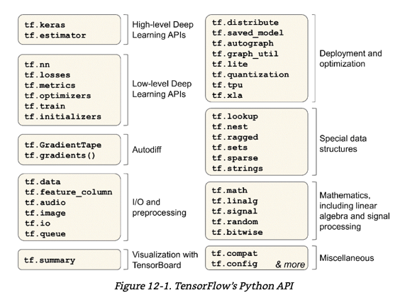
As an example, let us use tf.GradientTape.
This API performs automatic differentiation.
x = tf.constant(3.0)
y = tf.constant(2.0)
with tf.GradientTape(persistent=True) as g:
g.watch(x)
g.watch(y)
z0 = x ** 2
z1 = y ** 3
z2 = x ** 2 + 2*x*y + y**2
dz0_dx = g.gradient(z0, x) # d(x^2)/dx = 2x
print(dz0_dx)
dz1_dy = g.gradient(z1, y) # d(y^3)/dy = 3y^2
print(dz1_dy)
dz2_dx = g.gradient(z2, x) # partial derivative of x^2 + 2xy + y^2 w.r.t. x: 2x + 2y
print(dz2_dx)
dz2_dy = g.gradient(z2, y) # partial derivative of x^2 + 2xy + y^2 w.r.t. y: 2x + 2y
print(dz2_dy)
dz2 = g.gradient(z2, x, y) # total derivative
print(dz2)tf.Tensor(6.0, shape=(), dtype=float32)
tf.Tensor(12.0, shape=(), dtype=float32)
tf.Tensor(10.0, shape=(), dtype=float32)
tf.Tensor(10.0, shape=(), dtype=float32)
tf.Tensor(20.0, shape=(), dtype=float32)Now the derivative of the sigmoid function.
x = tf.constant(5.0)
with tf.GradientTape(persistent=True) as g:
g.watch(x)
s = tf.sigmoid(x)
ds_dx = g.gradient(s, x)
print(ds_dx)tf.Tensor(0.006648033, shape=(), dtype=float32)Compare with the value computed by hand, \(\sigma'(x) = \sigma(x)(1-\sigma(x))\).
import numpy as np
################## Fill Your Code! ##################
# derivative of sigmoid at 5.0, computed by hand
ds = 1/(1+np.exp(-5.0))
sigmoid_prime = ds * (1 - ds)
#####################################################
print(sigmoid_prime)0.0066480566707901551.2 Keras
Keras is a high-level deep-learning API built on top of TensorFlow.
- Common layer types make it easy to assemble the network you want.
- It provides APIs for training, evaluation and inference.
Let us look at the Keras API through an example:
the MNIST problem from the previous lab, now solved with a deep neural network (DNN).
import tensorflow as tf
(x_train, y_train), (x_test, y_test) = tf.keras.datasets.mnist.load_data()Downloading data from https://storage.googleapis.com/tensorflow/tf-keras-datasets/mnist.npz
11490434/11490434 [==============================] - 0s 0us/stepprint(x_train.shape) # (60000, 28, 28)
print(y_train.shape) # (60000, )(60000, 28, 28)
(60000,)import matplotlib.pyplot as plt
print("Y[0] : ", y_train[0])
plt.imshow(x_train[0], cmap=plt.cm.gray_r, interpolation = "nearest")Y[0] : 5<matplotlib.image.AxesImage at 0x7c136caed240>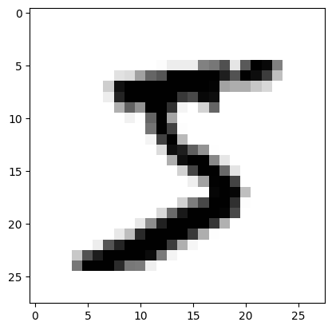
# Before preprocessing
print(x_train[0,15])[ 0 0 0 0 0 0 0 0 0 0 0 0 0 0 45 186 253 253
150 27 0 0 0 0 0 0 0 0]# Preprocessing: scale pixels to [0, 1]
x_train, x_test = x_train / 255.0, x_test / 255.0
print(x_train[0,15])[0. 0. 0. 0. 0. 0.
0. 0. 0. 0. 0. 0.
0. 0. 0.17647059 0.72941176 0.99215686 0.99215686
0.58823529 0.10588235 0. 0. 0. 0.
0. 0. 0. 0. ]# One Hot Encoding
y_train = tf.keras.utils.to_categorical(y_train, 10)
y_test = tf.keras.utils.to_categorical(y_test, 10)x_train[0].shape(28, 28)1.2.1 A DNN with Keras
Keras manages layers with the Sequential class.
Layers are appended with its add() method.
The layers live in the keras.layers API: https://keras.io/api/layers/
################## Fill Your Code! ##################
model = tf.keras.Sequential()
model.add(tf.keras.layers.Flatten(input_shape = x_train[0].shape))
model.add(tf.keras.layers.Dense(units=256, input_dim=784, activation='relu'))
model.add(tf.keras.layers.Dense(units=128, activation='relu'))
model.add(tf.keras.layers.Dense(units=64, activation='relu'))
model.add(tf.keras.layers.Dense(units=32, activation='relu'))
model.add(tf.keras.layers.Dense(units=10, activation='softmax'))
#####################################################
model.summary()Model: "sequential"
_________________________________________________________________
Layer (type) Output Shape Param #
=================================================================
flatten (Flatten) (None, 784) 0
dense (Dense) (None, 256) 200960
dense_1 (Dense) (None, 128) 32896
dense_2 (Dense) (None, 64) 8256
dense_3 (Dense) (None, 32) 2080
dense_4 (Dense) (None, 10) 330
=================================================================
Total params: 244522 (955.16 KB)
Trainable params: 244522 (955.16 KB)
Non-trainable params: 0 (0.00 Byte)
_________________________________________________________________Once the model is defined, the training setup has to be configured:
for example the loss function, the optimizer and the learning rate.
These are set with the compile() method.
model.compile(loss='categorical_crossentropy', optimizer = 'adam', metrics=['accuracy'])################## Fill Your Code! ##################
history = model.fit(x_train, y_train, batch_size=64, epochs=10, validation_data=(x_test, y_test))
#####################################################Epoch 1/10
938/938 [==============================] - 18s 10ms/step - loss: 0.2464 - accuracy: 0.9266 - val_loss: 0.1151 - val_accuracy: 0.9655
Epoch 2/10
938/938 [==============================] - 10s 11ms/step - loss: 0.0958 - accuracy: 0.9701 - val_loss: 0.0822 - val_accuracy: 0.9747
Epoch 3/10
938/938 [==============================] - 10s 11ms/step - loss: 0.0663 - accuracy: 0.9790 - val_loss: 0.0914 - val_accuracy: 0.9732
Epoch 4/10
938/938 [==============================] - 9s 10ms/step - loss: 0.0508 - accuracy: 0.9843 - val_loss: 0.0896 - val_accuracy: 0.9735
Epoch 5/10
938/938 [==============================] - 7s 8ms/step - loss: 0.0430 - accuracy: 0.9859 - val_loss: 0.0819 - val_accuracy: 0.9780
Epoch 6/10
938/938 [==============================] - 5s 5ms/step - loss: 0.0346 - accuracy: 0.9890 - val_loss: 0.0777 - val_accuracy: 0.9787
Epoch 7/10
938/938 [==============================] - 4s 4ms/step - loss: 0.0298 - accuracy: 0.9904 - val_loss: 0.0875 - val_accuracy: 0.9779
Epoch 8/10
938/938 [==============================] - 4s 4ms/step - loss: 0.0268 - accuracy: 0.9913 - val_loss: 0.0902 - val_accuracy: 0.9777
Epoch 9/10
938/938 [==============================] - 5s 5ms/step - loss: 0.0226 - accuracy: 0.9927 - val_loss: 0.0888 - val_accuracy: 0.9791
Epoch 10/10
938/938 [==============================] - 4s 5ms/step - loss: 0.0217 - accuracy: 0.9934 - val_loss: 0.0880 - val_accuracy: 0.9796import pandas as pd
pd.DataFrame(history.history).plot(figsize=(8, 5))
plt.grid(True)
plt.show()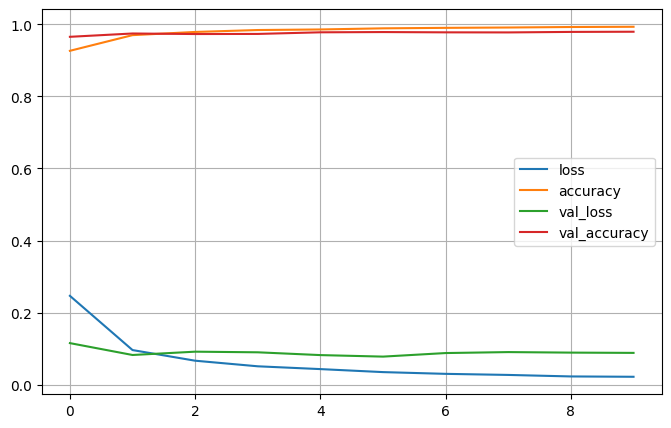
2. CIFAR-10 with a DNN
2.1 The CIFAR-10 Dataset
This time we switch to a different dataset.
from tensorflow import keras(train_images, train_labels), (test_images, test_labels) = keras.datasets.cifar10.load_data()
train_images,test_images = train_images/255.0, test_images/255.0Downloading data from https://www.cs.toronto.edu/~kriz/cifar-10-python.tar.gz
170498071/170498071 [==============================] - 2s 0us/stepprint(train_images.shape)
print(train_images.dtype)
print(test_images.shape)
print(test_images.dtype)(50000, 32, 32, 3)
float64
(10000, 32, 32, 3)
float64from sklearn.model_selection import train_test_split
train_images, valid_images, train_labels, valid_labels = train_test_split(train_images, train_labels, stratify = train_labels, test_size = 0.1, random_state = 10)
print(train_images.shape, valid_images.shape)
print(np.unique(train_labels, return_counts = True))
print(np.unique(valid_labels, return_counts = True))
print(np.unique(test_labels, return_counts = True))(45000, 32, 32, 3) (5000, 32, 32, 3)
(array([0, 1, 2, 3, 4, 5, 6, 7, 8, 9], dtype=uint8), array([4500, 4500, 4500, 4500, 4500, 4500, 4500, 4500, 4500, 4500]))
(array([0, 1, 2, 3, 4, 5, 6, 7, 8, 9], dtype=uint8), array([500, 500, 500, 500, 500, 500, 500, 500, 500, 500]))
(array([0, 1, 2, 3, 4, 5, 6, 7, 8, 9], dtype=uint8), array([1000, 1000, 1000, 1000, 1000, 1000, 1000, 1000, 1000, 1000]))class_names = ['airplane', 'automobile', 'bird', 'cat', 'deer', 'dog', 'frog', 'horse', 'ship', 'truck']
plt.figure(figsize=(10,10))
for i in range(25):
plt.subplot(5,5,i+1)
plt.xticks([])
plt.yticks([])
plt.grid(False)
plt.imshow(train_images[i], cmap=plt.cm.binary)
# The CIFAR labels happen to be arrays,
# which is why you need the extra index
plt.xlabel(class_names[train_labels[i][0]])
plt.show()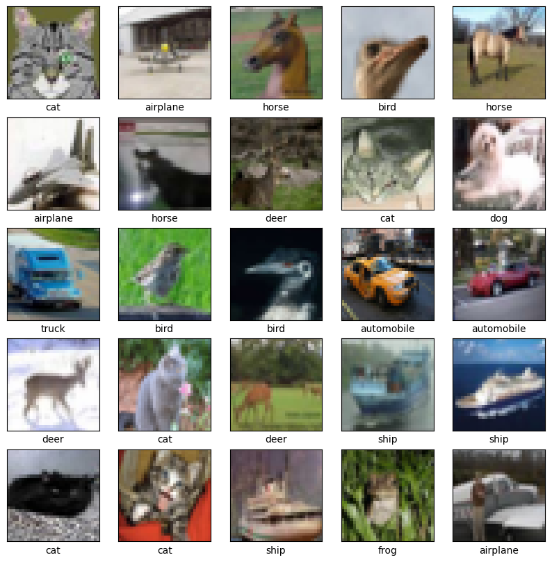
train_images[0].shape(32, 32, 3)2.2 DNN Model
# Task: build a network with 1024 / 512 / 256 hidden nodes
# activation function : relu
################## Fill Your Code! ##################
dnn_model = keras.models.Sequential([ # takes a list of layers
keras.layers.Flatten(input_shape = train_images[0].shape),
keras.layers.Dense(1024, activation = 'relu'),
keras.layers.Dense(512, activation = 'relu'),
keras.layers.Dense(256, activation = 'relu'),
keras.layers.Dense(len(class_names), activation = 'softmax')
])
#####################################################
dnn_model.summary()Model: "sequential_1"
_________________________________________________________________
Layer (type) Output Shape Param #
=================================================================
flatten_1 (Flatten) (None, 3072) 0
dense_5 (Dense) (None, 1024) 3146752
dense_6 (Dense) (None, 512) 524800
dense_7 (Dense) (None, 256) 131328
dense_8 (Dense) (None, 10) 2570
=================================================================
Total params: 3805450 (14.52 MB)
Trainable params: 3805450 (14.52 MB)
Non-trainable params: 0 (0.00 Byte)
_________________________________________________________________dnn_model.compile(loss='sparse_categorical_crossentropy', optimizer = 'adam', metrics=['accuracy'])# Model fit()
dnn_history = dnn_model.fit(train_images, train_labels, batch_size=64,epochs=20, validation_data = [valid_images, valid_labels])Epoch 1/20
704/704 [==============================] - 5s 5ms/step - loss: 1.8843 - accuracy: 0.3167 - val_loss: 1.8453 - val_accuracy: 0.3276
Epoch 2/20
704/704 [==============================] - 3s 5ms/step - loss: 1.6910 - accuracy: 0.3929 - val_loss: 1.6777 - val_accuracy: 0.3952
Epoch 3/20
704/704 [==============================] - 5s 7ms/step - loss: 1.5934 - accuracy: 0.4301 - val_loss: 1.6024 - val_accuracy: 0.4216
Epoch 4/20
704/704 [==============================] - 5s 7ms/step - loss: 1.5446 - accuracy: 0.4468 - val_loss: 1.5614 - val_accuracy: 0.4406
Epoch 5/20
704/704 [==============================] - 5s 7ms/step - loss: 1.4938 - accuracy: 0.4652 - val_loss: 1.5608 - val_accuracy: 0.4428
Epoch 6/20
704/704 [==============================] - 5s 7ms/step - loss: 1.4559 - accuracy: 0.4765 - val_loss: 1.5191 - val_accuracy: 0.4474
Epoch 7/20
704/704 [==============================] - 3s 5ms/step - loss: 1.4213 - accuracy: 0.4897 - val_loss: 1.4692 - val_accuracy: 0.4742
Epoch 8/20
704/704 [==============================] - 4s 5ms/step - loss: 1.3883 - accuracy: 0.5028 - val_loss: 1.5127 - val_accuracy: 0.4690
Epoch 9/20
704/704 [==============================] - 3s 5ms/step - loss: 1.3539 - accuracy: 0.5157 - val_loss: 1.5201 - val_accuracy: 0.4724
Epoch 10/20
704/704 [==============================] - 3s 5ms/step - loss: 1.3356 - accuracy: 0.5184 - val_loss: 1.4791 - val_accuracy: 0.4848
Epoch 11/20
704/704 [==============================] - 3s 5ms/step - loss: 1.2961 - accuracy: 0.5355 - val_loss: 1.4650 - val_accuracy: 0.4908
Epoch 12/20
704/704 [==============================] - 4s 5ms/step - loss: 1.2677 - accuracy: 0.5454 - val_loss: 1.4488 - val_accuracy: 0.4950
Epoch 13/20
704/704 [==============================] - 3s 5ms/step - loss: 1.2471 - accuracy: 0.5529 - val_loss: 1.4235 - val_accuracy: 0.5058
Epoch 14/20
704/704 [==============================] - 3s 4ms/step - loss: 1.2080 - accuracy: 0.5646 - val_loss: 1.4224 - val_accuracy: 0.5028
Epoch 15/20
704/704 [==============================] - 3s 5ms/step - loss: 1.1912 - accuracy: 0.5701 - val_loss: 1.4317 - val_accuracy: 0.5056
Epoch 16/20
704/704 [==============================] - 3s 5ms/step - loss: 1.1631 - accuracy: 0.5810 - val_loss: 1.5462 - val_accuracy: 0.4778
Epoch 17/20
704/704 [==============================] - 4s 6ms/step - loss: 1.1336 - accuracy: 0.5889 - val_loss: 1.4471 - val_accuracy: 0.5018
Epoch 18/20
704/704 [==============================] - 4s 6ms/step - loss: 1.1004 - accuracy: 0.6020 - val_loss: 1.4802 - val_accuracy: 0.5024
Epoch 19/20
704/704 [==============================] - 4s 5ms/step - loss: 1.0747 - accuracy: 0.6120 - val_loss: 1.4780 - val_accuracy: 0.4980
Epoch 20/20
704/704 [==============================] - 3s 4ms/step - loss: 1.0504 - accuracy: 0.6205 - val_loss: 1.5468 - val_accuracy: 0.5066# Loss curve
plt.figure(figsize=[6,4])
plt.plot(dnn_history.history['loss'], 'black', linewidth=2.0)
plt.plot(dnn_history.history['val_loss'], 'green', linewidth=2.0)
plt.legend(['Training Loss', 'Validation Loss'], fontsize=14)
plt.xlabel('Epochs', fontsize=10)
plt.ylabel('Loss', fontsize=10)
plt.title('Loss Curves', fontsize=12)Text(0.5, 1.0, 'Loss Curves')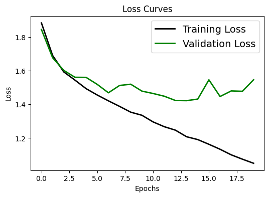
# Accuracy curve
plt.figure(figsize=[6,4])
plt.plot(dnn_history.history['accuracy'], 'black', linewidth=2.0)
plt.plot(dnn_history.history['val_accuracy'], 'blue', linewidth=2.0)
plt.legend(['Training Accuracy', 'Validation Accuracy'], fontsize=14)
plt.xlabel('Epochs', fontsize=10)
plt.ylabel('Accuracy', fontsize=10)
plt.title('Accuracy Curves', fontsize=12)Text(0.5, 1.0, 'Accuracy Curves')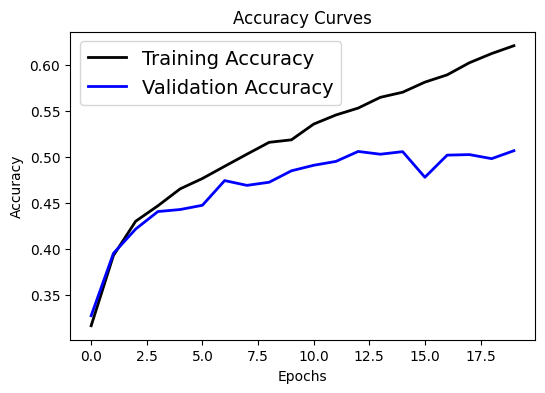
3. CIFAR-10 with a CNN
3.1 The CIFAR-10 Dataset
(train_images, train_labels), (test_images, test_labels) = keras.datasets.cifar10.load_data()
train_images,test_images = train_images/255.0, test_images/255.0print(train_images.shape)
print(train_images.dtype)
print(test_images.shape)
print(test_images.dtype)(50000, 32, 32, 3)
float64
(10000, 32, 32, 3)
float64from sklearn.model_selection import train_test_split
train_images, valid_images, train_labels, valid_labels = train_test_split(train_images, train_labels, stratify = train_labels, test_size = 0.1, random_state = 10)
print(train_images.shape, valid_images.shape)
print(np.unique(train_labels, return_counts = True))
print(np.unique(valid_labels, return_counts = True))
print(np.unique(test_labels, return_counts = True))(45000, 32, 32, 3) (5000, 32, 32, 3)
(array([0, 1, 2, 3, 4, 5, 6, 7, 8, 9], dtype=uint8), array([4500, 4500, 4500, 4500, 4500, 4500, 4500, 4500, 4500, 4500]))
(array([0, 1, 2, 3, 4, 5, 6, 7, 8, 9], dtype=uint8), array([500, 500, 500, 500, 500, 500, 500, 500, 500, 500]))
(array([0, 1, 2, 3, 4, 5, 6, 7, 8, 9], dtype=uint8), array([1000, 1000, 1000, 1000, 1000, 1000, 1000, 1000, 1000, 1000]))3.2 CNN Model
cnn_model = keras.models.Sequential([
################## Fill Your Code! ##################
keras.layers.Conv2D(32, (3, 3), activation='relu', input_shape=train_images[0].shape),
keras.layers.MaxPooling2D( (2, 2) ),
keras.layers.Conv2D(64, (3, 3), activation='relu'),
keras.layers.MaxPooling2D( (2, 2) ),
keras.layers.Conv2D(128, (3, 3), activation='relu'),
# 1. flatten the feature maps
# 2. dense layer with 128 nodes (relu)
# 3. classification layer
keras.layers.Flatten(),
keras.layers.Dense(128, activation='relu'),
keras.layers.Dense(len(class_names), activation='softmax')
#####################################################
])
cnn_model.summary()Model: "sequential_2"
_________________________________________________________________
Layer (type) Output Shape Param #
=================================================================
conv2d (Conv2D) (None, 30, 30, 32) 896
max_pooling2d (MaxPooling2 (None, 15, 15, 32) 0
D)
conv2d_1 (Conv2D) (None, 13, 13, 64) 18496
max_pooling2d_1 (MaxPoolin (None, 6, 6, 64) 0
g2D)
conv2d_2 (Conv2D) (None, 4, 4, 128) 73856
flatten_2 (Flatten) (None, 2048) 0
dense_9 (Dense) (None, 128) 262272
dense_10 (Dense) (None, 10) 1290
=================================================================
Total params: 356810 (1.36 MB)
Trainable params: 356810 (1.36 MB)
Non-trainable params: 0 (0.00 Byte)
_________________________________________________________________cnn_model.compile(loss='sparse_categorical_crossentropy', optimizer = 'adam', metrics=['accuracy'])# Model fit()
cnn_history = cnn_model.fit(train_images, train_labels, batch_size=64,epochs=20, validation_data = [valid_images, valid_labels])Epoch 1/20
704/704 [==============================] - 10s 6ms/step - loss: 1.5507 - accuracy: 0.4354 - val_loss: 1.3650 - val_accuracy: 0.5182
Epoch 2/20
704/704 [==============================] - 4s 6ms/step - loss: 1.1773 - accuracy: 0.5820 - val_loss: 1.1679 - val_accuracy: 0.5982
Epoch 3/20
704/704 [==============================] - 4s 5ms/step - loss: 1.0167 - accuracy: 0.6430 - val_loss: 1.0191 - val_accuracy: 0.6444
Epoch 4/20
704/704 [==============================] - 3s 5ms/step - loss: 0.9087 - accuracy: 0.6802 - val_loss: 0.9418 - val_accuracy: 0.6804
Epoch 5/20
704/704 [==============================] - 4s 5ms/step - loss: 0.8226 - accuracy: 0.7108 - val_loss: 0.9135 - val_accuracy: 0.6856
Epoch 6/20
704/704 [==============================] - 4s 6ms/step - loss: 0.7519 - accuracy: 0.7380 - val_loss: 0.8296 - val_accuracy: 0.7152
Epoch 7/20
704/704 [==============================] - 4s 5ms/step - loss: 0.6805 - accuracy: 0.7594 - val_loss: 0.8678 - val_accuracy: 0.7058
Epoch 8/20
704/704 [==============================] - 3s 5ms/step - loss: 0.6243 - accuracy: 0.7813 - val_loss: 0.8589 - val_accuracy: 0.7094
Epoch 9/20
704/704 [==============================] - 4s 6ms/step - loss: 0.5686 - accuracy: 0.8007 - val_loss: 0.8685 - val_accuracy: 0.7188
Epoch 10/20
704/704 [==============================] - 4s 6ms/step - loss: 0.5193 - accuracy: 0.8160 - val_loss: 0.9144 - val_accuracy: 0.7082
Epoch 11/20
704/704 [==============================] - 3s 5ms/step - loss: 0.4694 - accuracy: 0.8352 - val_loss: 0.8830 - val_accuracy: 0.7196
Epoch 12/20
704/704 [==============================] - 4s 6ms/step - loss: 0.4201 - accuracy: 0.8535 - val_loss: 0.9331 - val_accuracy: 0.7162
Epoch 13/20
704/704 [==============================] - 4s 6ms/step - loss: 0.3743 - accuracy: 0.8668 - val_loss: 0.9351 - val_accuracy: 0.7176
Epoch 14/20
704/704 [==============================] - 4s 5ms/step - loss: 0.3303 - accuracy: 0.8832 - val_loss: 1.0145 - val_accuracy: 0.7214
Epoch 15/20
704/704 [==============================] - 4s 6ms/step - loss: 0.2947 - accuracy: 0.8940 - val_loss: 1.1221 - val_accuracy: 0.7104
Epoch 16/20
704/704 [==============================] - 4s 5ms/step - loss: 0.2607 - accuracy: 0.9084 - val_loss: 1.1498 - val_accuracy: 0.7076
Epoch 17/20
704/704 [==============================] - 4s 5ms/step - loss: 0.2297 - accuracy: 0.9174 - val_loss: 1.4103 - val_accuracy: 0.6908
Epoch 18/20
704/704 [==============================] - 4s 5ms/step - loss: 0.2063 - accuracy: 0.9265 - val_loss: 1.3605 - val_accuracy: 0.7062
Epoch 19/20
704/704 [==============================] - 6s 8ms/step - loss: 0.1805 - accuracy: 0.9360 - val_loss: 1.3252 - val_accuracy: 0.7138
Epoch 20/20
704/704 [==============================] - 4s 6ms/step - loss: 0.1633 - accuracy: 0.9402 - val_loss: 1.5198 - val_accuracy: 0.6972# Loss curve
plt.figure(figsize=[6,4])
plt.plot(cnn_history.history['loss'], 'black', linewidth=2.0)
plt.plot(cnn_history.history['val_loss'], 'green', linewidth=2.0)
plt.legend(['Training Loss', 'Validation Loss'], fontsize=14)
plt.xlabel('Epochs', fontsize=10)
plt.ylabel('Loss', fontsize=10)
plt.title('Loss Curves', fontsize=12)Text(0.5, 1.0, 'Loss Curves')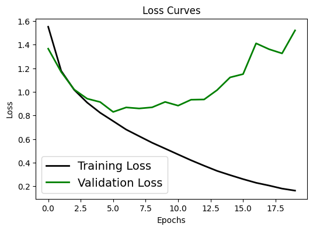
# Accuracy curve
plt.figure(figsize=[6,4])
plt.plot(cnn_history.history['accuracy'], 'black', linewidth=2.0)
plt.plot(cnn_history.history['val_accuracy'], 'blue', linewidth=2.0)
plt.legend(['Training Accuracy', 'Validation Accuracy'], fontsize=14)
plt.xlabel('Epochs', fontsize=10)
plt.ylabel('Accuracy', fontsize=10)
plt.title('Accuracy Curves', fontsize=12)Text(0.5, 1.0, 'Accuracy Curves')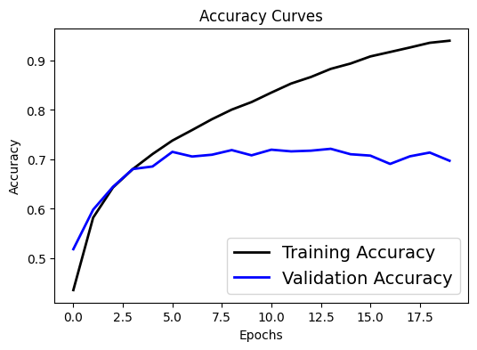